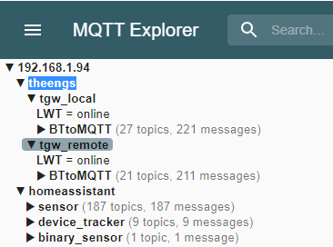
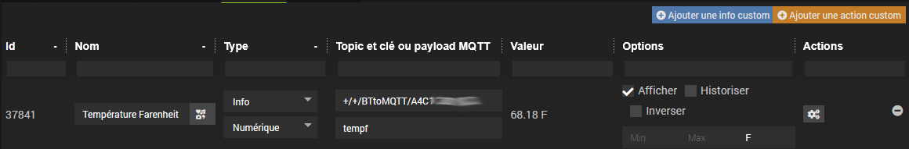

Ce plugin permet de découvrir/gérer les devices bluetooth et les antennes BLE OMG ESP32. Les antennes Theengs sont aussi reconnues mais pas leurs paramètres car elles ne supportent pas (encore?) l'auto-découverte Home Assistant. Il ne remplace pas le #plugin-theengs pour déployer et gérer les antennes Theengs.
Le plugin nécessite que le broker publie un ou plusieurs roottopics qui regroupent chacun une ou plusieurs antennes. Le topic d'auto-découverte est optionnel, s'il n'est pas fourni seule la présence sera disponible sur les équipements.
La structure doit respecter le schéma suivant:
/root_topic1/antenne1
/root_topic1/antenne2
/root_topic2/antenne3
...
/topic_de_découverte
ex. ici un seul roottopic theengs avec 2 antennes tgw_localet tgw_remote.
LWT et BTtoMQTT doivent être directement sous chaque antenne:

Par défaut dans ce mode le plugin utilise la configuration MQTT2 (si installé).
Le démarrage du plugin MQTT2 est automatique.

Dans ce mode le démarrage du broker MQTT n'est pas géré par le plugin.
Il est nécessaire de renseigner les informations de connexion MQTT.
- Adresse du broker: défaut mqtt://localhost:1883
- Authentification: utilisateur et mot de passe

homeassistantroot_topics surveillés par le plugin (au moins un). Les sous-topics ne sont pas acceptés.55036, ne pas changer sauf conflitL'auto-découverte est active au démarrage, les antennes détectées sont ajoutées automatiquement. Vous pouvez également l'interrompre ou la relancer avec le bouton Auto-découverte.
Si la création automatique a été cochée sur la page configuration les devices seront automatiquement ajoutés en fin de synchroniation.

Affiche tous les devices non gérés. La colonne Découvrable permet de déterminer si les devices supportent l'auto-découverte ou pas. L'option afficher les devices absents permet de voir les devices auto-découverts qui ne sont pas joignables. Il est possible de filtrer les lignes du tableau par clic sur les entêtes de colonnes.
Le bouton Ajouter permet d'ajouter les devices découverts un par un. Si le device est auto-découvrable ses commandes seront automatiquement créées, sinon seuls la présence et le RSSI seront disponibles.

L'affichage contextuel peut se faire par atténuation ou par distance (si supporté par l'antenne).
Il s'active en sélectionnant un noeud. L'animation peut être mise en pause et le graphe est zoomable.

Sont affichés les devices déjà ajoutés. Il est possible d'afficher les devices absents et de filtrer les lignes du tableau par clic sur les entêtes de colonnes.

L'affichage contextuel peut se faire par atténuation ou par distance (si supporté par l'antenne).
Il s'active en sélectionnant un noeud.
L'animation peut être mise en pause. Il est également possible de filter les devices absents.

Les commandes disponibles dépendent du type de device ou d'antenne.
Une image personnalisée peut être ajoutée par catégorie d'équipement.
Les antennes Theengs n'ont aucune commande sauf la présence. Les antennes ESP32 possèdent plusieurs commandes supplémentaires, cf les onglets Bluetooth et Système.
Le bouton Console web permet d'accéder à l'interface d'administration des ESP32.
Pour plus d'informations voir la doc des commandes ESP32


L'onglet Custom permet d'ajouter des commandes personnalisées qui seraient présentes dans l'advertising mais pas dans l'auto-découverte (selon les devices), par ex ici la température en Farenheit (tempf) pour un Xiaomi lywsd03mmc reprogrammé:

Idem pour les commandes manquantes d'un ESP32 comme l'activation/désactivation du décodage externe ou le nombre de messages recus:

Pour les actions le champ payload doit être de la forme "clé1":valeur1 , "clé2":valeur2...
Les données d'advertising et les données auto-découvertes sont disponibles dans la colonne Autres données de la page Liste des devices inconnus

BT: Force scan ou reboot de l'ESP32 ou de l'antenne Theengs)SYS: Auto discoveryBT: Publish Advertisement data BT: Publish HASS presenceVoir le forum Jeedom community